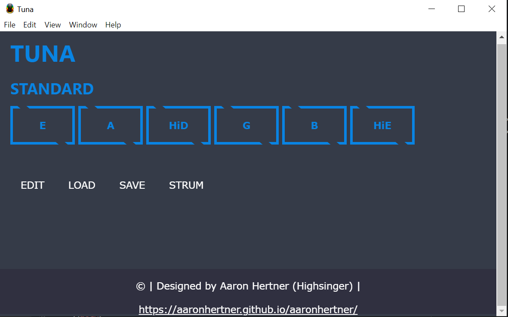
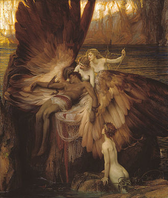

Home
Most Recent Project
2019-12-30 22:43
TunaThis is an application developed using Javascript, HTML, and CSS. Tuna is a guitar tuning application using the electron.js library which allows the user to customize, save, and load new tunings.
Most Recent Link
2020-01-19 20:16
Daedalus MazesWho is Daedalus? In Greek mythology, Daedalus was a skillful architect, craftsman and artist. He invented and built the Labyrinth for King Minos of Crete, but shortly after finishing it King Minos had Daedalus imprisoned within the labyrinth. He and his son Icarus devised a plan to escape by using wings made of wax that Daedalus had invented. They escaped, but sadly Icarus did not heed his father's warnings and flew too close to the sun. The wax melted and Icarus fell to his death. This left Daedalus heartbroken, but instead of giving up he flew to the island of Sicily.
